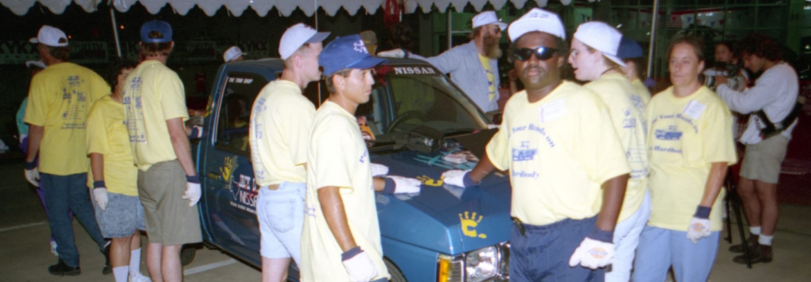

HANDS ON A HARDBODY: THE DOCUMENTARY (1997) in 16mm
Two dozen contestants gather around a hardbody pickup truck at a Nissan dealership in East Texas in 1997; seventy-seven hours later, the last person with his or her hand on the truck wins it free and clear. It’s a simple enough premise, but one that S.R. Bindler’s deft low-budget documentary spins into a hilarious, fascinating, and unexpectedly moving panorama of American dreams dared and dashed. A native of the Longview, Texas community where HARDBODY was filmed, Bindler effortlessly captures an ultra-specific sense of time and place with his consumer video cameras. After being distributed theatrically nationwide, optioned by Robert Altman for a possible feature, adapted as a Broadway musical, and championed by a generation of passionate video-store clerks–it’s clear that HANDS ON A HARDBODY also captured something universal, standing 20 years later alongside AMERICAN MOVIE and PARADISE LOST (1996) as one of the most significant and compelling documentaries of the decade.
HANDS ON A HARDBODY: THE DOCUMENTARY was shot on Hi-8 video and transferred to 16mm film for festival screenings before being blown up to 35mm for theatrical distribution. After the film’s distributor folded, the prints went missing, with only one known 35mm print existing in a private collection. For this rare screening, Block Cinema will present the original 16mm festival print of HARDBODY, with thanks to S.R. Bindler and Lisa Lieber.